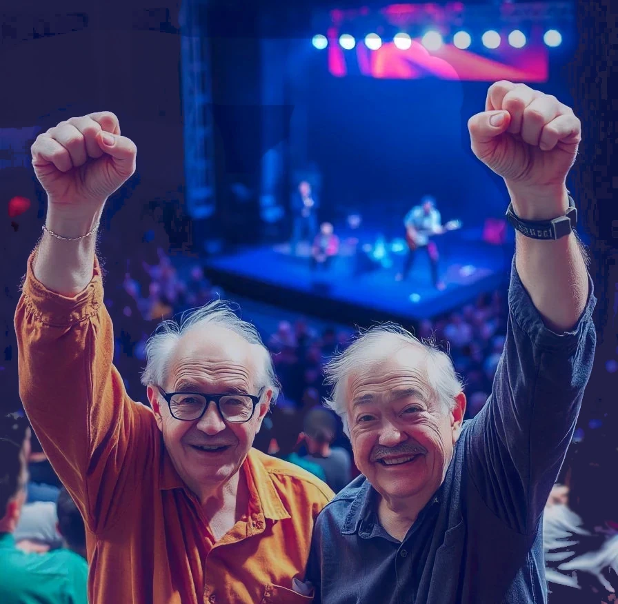

Old Men Rock!

Two elderly men from Parson’s Nursing Home escaped on Saturday Night. When the night guard was making his 10 p.m. rounds, he noticed that Mr Bud’s door was open and all the lights were off. Looking inside, he noticed an empty bed. Turning on the lights, no one was to be found.
This is a very stressful situation for the staff of the nursing home because oftentimes patients go missing because they have dementia or other memory problems. As the staff were looking for Mr. Bud, they noticed that Mr. Bob was also missing.
The staff reported the missing patients to the police. Police dispatchers put out an alert to all other officers to keep an eye out for two elderly men, possibly travelling together.
Officer Caldwell had his own idea about what might have happened. There are not a lot of things to do after 10 p.m. in Carson City. The only thing going on was a heavy metal rock concert in Pontree, a town about 25 km away. Officer Caldwell thought this would give him a good excuse to enjoy some of the concert for free. So officer Caldwell drove to the concert and went to the front gate. When the gate attendant asked for a ticket, the officer told him he was on police business. The attendant let him pass.
Officer Caldwell had another great idea. Considering the age of the missing men, Caldwell took a chance that he might find them at the first-aid station. He was directed to the medical tent by the concert staff.
The two men were there. They were sitting in front of an outdoor coolant fan and sipping on fruit juice. Several young nurses kept checking on them to make sure they were okay. They got a lot of attention from the young people and were having a great time.
Officer Caldwell was hesitant to break up their good-time, nevertheless, it was his duty. At first the men were reluctant to leave but the officer reminded them that their actions made a lot of people very worried about them. The men finally agreed to return to the nursing home.
One social media response asked, “Are these men prisoners? It’s a nursing home, not jail. Why can’t they go out and have fun without interference?”
A staff from the nursing home responded, “Of course, anyone with no serious health, emotional, or psychological issues are free to come and go. But some of our guests are really more like patients. We have the responsibility to care for and protect patients that are placed here by their legal conservator or by a court order.”
At any rate, Bud and Bob plan on going to the concert again next year. “Next time, we’ll plan it out and not sneak off. We will notify everyone. We don’t want to unnecessarily worry anyone again.”